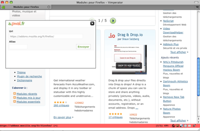
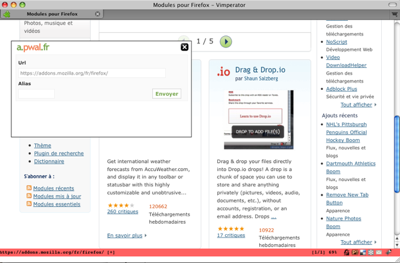

Firefox extension
This extension add an icon () to your status bar.
A popup window show up when you click it to allow you to get a short url for the current page

Install
Click here to get latest version: 0.2
This extension add an icon () to your status bar.
A popup window show up when you click it to allow you to get a short url for the current page

Click here to get latest version: 0.2